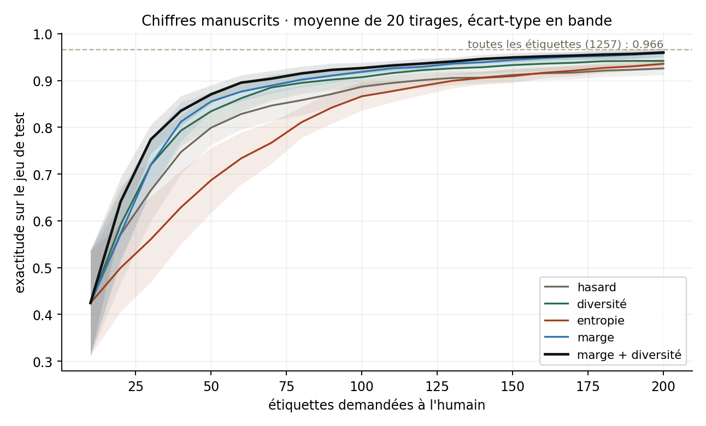

Mesurer ce que coûte vraiment une annotation
Étiqueter coûte cher : c'est le constat de mon stage chez Nricher, où un chargé de compte relit un échantillon de mille produits en un à deux jours. La question posée ici est la même, isolée et mesurée : à budget d'annotation fixe, quelle stratégie de sélection fait monter le modèle le plus vite ?
Le protocole est volontairement sévère. On part de dix exemples étiquetés au hasard, on ajoute des lots de dix choisis par la stratégie testée, on réentraîne et on mesure l'exactitude sur un jeu de test jamais touché. Chaque courbe est la moyenne de vingt tirages indépendants — partage entraînement/test et amorce compris — et chaque comparaison est appariée : la même graine donne au hasard et à la stratégie testée exactement la même situation de départ, ce qui permet un test de Wilcoxon honnête.
Cinq stratégies : tirage au hasard ; marge (l'écart entre les deux classes les plus probables — plus il est petit, plus l'exemple est ambigu) ; entropie de la distribution prédite ; diversité (k-centres : l'exemple le plus loin de tout ce qui est déjà étiqueté) ; et marge puis diversité, qui présélectionne les ambigus avant d'y chercher des exemples écartés les uns des autres.
Deux cents étiquettes suffisent presque
Avec 200 étiquettes sur 1 257, soit 16 % du jeu d'entraînement, la stratégie « marge puis diversité » atteint 0,960 d'exactitude, quand l'entraînement sur toutes les étiquettes plafonne à 0,967. Le tirage au hasard, lui, reste à 0,926 avec le même budget : c'est trente-quatre points de pourcentage d'erreur en moins, pour le même travail humain.

| Exactitude par budget d'étiquettes | 20 | 50 | 100 | 200 |
|---|---|---|---|---|
| marge + diversité | 0,641 | 0,871 | 0,927 | 0,960 |
| marge | 0,573 | 0,855 | 0,919 | 0,958 |
| diversité | 0,592 | 0,834 | 0,907 | 0,942 |
| hasard | 0,571 | 0,799 | 0,887 | 0,926 |
| entropie | 0,499 | 0,687 | 0,866 | 0,936 |
Les écarts sont significatifs à tous les budgets pour « marge puis diversité » (p = 0,002 à vingt étiquettes, p < 0,001 ensuite), et la conclusion résiste au changement de classifieur : avec une forêt aléatoire, la marge atteint 0,971 contre 0,924 pour le hasard à deux cents étiquettes.
03 · Ce qui n'a pas marchéL'entropie, et les problèmes trop faciles
L'entropie fait pire que le tirage au hasard au démarrage. À vingt étiquettes, elle tombe à 0,499 contre 0,571 (p = 0,012) ; à cinquante, 0,687 contre 0,799 (p = 0,0002). L'explication tient à la tâche : avec dix classes et un modèle à peine formé, la distribution prédite est plate presque partout, et l'entropie sélectionne alors les exemples les plus confus — souvent les plus atypiques, ceux dont on apprend le moins. La marge, qui ne regarde que les deux meilleures classes, vise beaucoup mieux.
Deuxième limite, plus utile encore à connaître : sur un problème facile, toutes les stratégies se valent. Sur le jeu binaire de diagnostic du cancer du sein, à cent vingt étiquettes, « marge puis diversité » donne 0,974 et le hasard 0,967, quand l'entraînement complet atteint 0,975. Autrement dit, l'apprentissage actif ne se justifie que si la tâche est difficile ou les classes nombreuses. C'est exactement la question à poser avant de le proposer à un client.
04 · Dans le navigateurLe modèle que vous entraînez est-il le bon ?
Le bac à sable n'appelle aucun serveur : la régression logistique multinomiale y est réécrite en JavaScript, entraînée par descente de gradient après chaque étiquette, et évaluée sur trois cents images tenues à part. Restait à vérifier qu'elle vaut bien l'implémentation de référence.
Sur cinq parties jouées automatiquement avec les vraies étiquettes, le modèle du navigateur atteint 86,2 % ± 1,3 à cinquante étiquettes et 89,1 % ± 1,4 à soixante-dix, contre 85,5 % ± 2,0 et 88,9 % ± 1,7 pour scikit-learn dans les mêmes conditions : moins d'un point d'écart dès quarante étiquettes. En dessous, le modèle du navigateur est même un peu meilleur — sa régularisation et son nombre d'itérations limité le protègent quand les exemples se comptent sur les doigts.